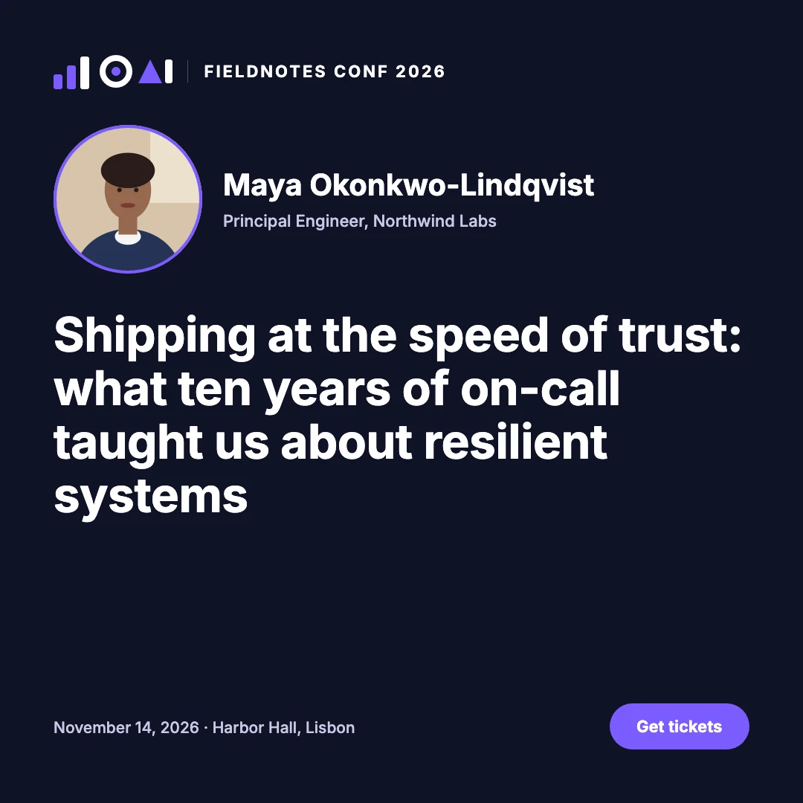
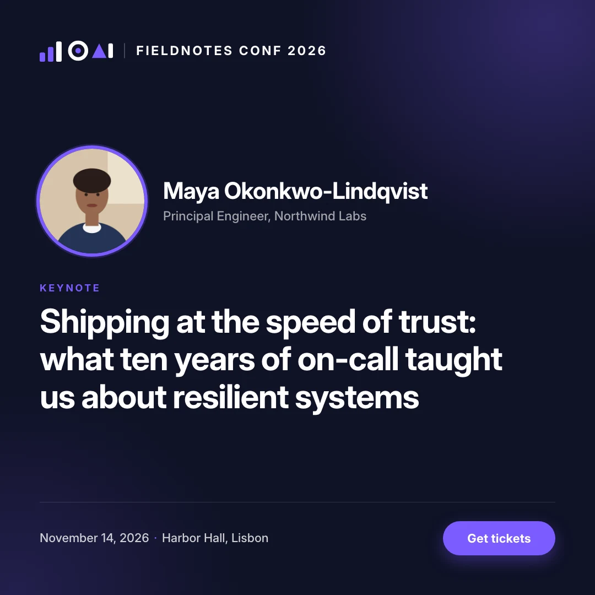

Kindlepaw Rescue Adoption posts
1 template · 4 dogs · 12 files · 0 defects
The same card, one row per dog: name, age, traits and photo come from the data.


Photos: Matthew Wiebe, André Spieker, Alexander Dimitrov, Yamon Figurs / Unsplash
An MCP server for Claude, Codex, Cursor and any agent
Your agent describes a design once. keyline renders it as images and video at every size you need. No Chrome needed.
Make a listing ad for Villa Lefka in Oia: an Instagram post, a Facebook banner and a skyscraper. Give the photo a slow zoom.
Done: three sizes from one layout, all checks clean. The photo zooms toward the tower and back, and the loop runs every 8 seconds.
Works with
Each campaign is one small JSON scene, rendered and checked by keyline. The brands are fictional; the photos are real.
1 template · 4 dogs · 12 files · 0 defects
The same card, one row per dog: name, age, traits and photo come from the data.
Photos: Matthew Wiebe, André Spieker, Alexander Dimitrov, Yamon Figurs / Unsplash
1 scene · 5 sizes, down to 728×90 · a pan that follows the rider · 0 defects
The layout reflows from a post to a leaderboard banner; the checks confirm every size.


Photo: Abigail Keenan / Unsplash
4 shots · duotone photos · letters that fly in · 0 defects
Three unrelated photos read as one campaign; the headliner's letters land in place.

Photos: Daniel Robert, Gonzalo Poblete, Desi Mendoza / Unsplash
2 languages · 4 sizes · 8 files · the longer Spanish still fits
One campaign, one row per language; the text-fitting checks prove every size holds.


Photo: Nicholas Swanson / Unsplash
A UI built from layers · a focus ring that draws itself · hours that count up
No screenshot: the app's interface is built in the scene, so it stays sharp at every size.

Photo: William Iven / Unsplash
1 scene · a print PDF, a post and a story
The same menu as vector A4 for the printer and as social posts; dot leaders run to the prices.


Photos: Todd Quackenbush, Annie Spratt / Unsplash
The agent works in a small JSON scene. keyline measures it and says what's wrong, so the agent fixes the design before anyone looks at pixels.
Text, images, shapes, layout and motion, in names models already know from CSS and Figma.
{"id": "headline", "type": "text",
"text": "Cold Brew Season",
"fontSize": 168, "fontWeight": 900,
"textWrap": "balance",
"media": {"banner": {"fontSize": 104}}}Every edit replies with what doesn't fit, per size: cut text, overflow, low contrast, text under a platform's buttons.
changed headline v4
story headline text 96,1110 888×290 168px 2L
banner sub text 60,372 470×62 26px
!truncated needs 470×96PNG, JPEG, WebP, PDF, animated PNG, GIF, MP4 or WebM, with facts the agent can check without opening the files.
story …/story-v5.png (1080×1920, 78 KB)
banner …/banner-v5.png (1200×628, 46 KB)
square …/square-v5.mp4 (1080×1080, 5s,
125 frames at 25 fps, 2179 KB)We gave Claude one brief, a conference speaker card at three sizes, and two ways to make it: keyline, or HTML screenshotted by headless Chrome through Playwright. Both made the card. Here's what each took.


| keyline | Headless Chrome | |
|---|---|---|
| Tokens | 199k | 536k |
| Turns | 13 | 24 |
| Time | 2.0 min | 3.7 min |
| Images looked at | 4 | 7 |
On this task, keyline used less than half the tokens of a headless-browser agent.
Our second task, a flyer, supports no claim: keyline got it right 4 times in 5, the browser 5 in 5. Every run, failures included, the prompts and the judge are in the benchmark.
Stacks, grids and constraints adapt one design to a post, a banner and a skyscraper ad; media tweaks a single size.
The server measures text, overflow, contrast and safe areas, so the agent verifies with numbers instead of screenshots.
Entrance effects, keyframes, staggered text and video clips, rendered as GIF, animated PNG, MP4 or WebM.
One native Rust binary on Skia. No headless Chrome, Puppeteer or Playwright to install, run or patch.
No model generates pixels: a scene always renders the same way, on every machine.
Six tools, batched edits and terse replies: a full multi-size design in a couple of thousand tokens of tool traffic.
macOS, Windows and Linux. Every download is checksummed and built by GitHub Actions.
The plugin installs everything, downloading keyline if it isn't on your PATH.
/plugin marketplace add keyline-dev/keyline
/plugin install keyline@keylineDownload keyline-mcp-<version>.mcpb from the latest release and double-click it, or install it from Settings, Extensions. Mac (Apple silicon) and Windows.
macOS on Apple silicon. Then add keyline-mcp to your client.
brew install keyline-dev/tap/keyline-mcpLinux, nothing else to install. Use this as your client's command; :stills leaves out video and is a third the size.
docker run -i --rm -v keyline:/data ghcr.io/keyline-dev/keyline-mcpCodex, Cursor, VS Code, Windsurf, Cline and any MCP client: install keyline, then point the client at keyline-mcp. The Quick start has a setup block for each.
Keep designs as scene files in a repo; every push renders them and fails on a broken layout.
- uses: keyline-dev/keyline@v0
with:
scenes: campaigns/*.json